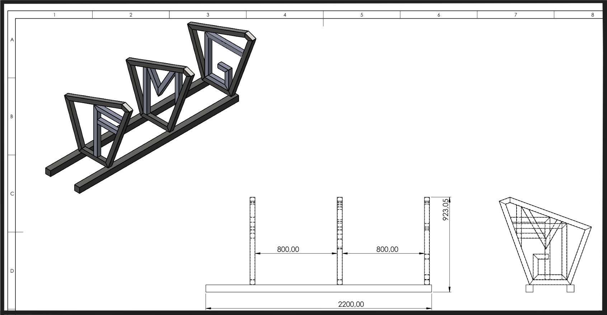
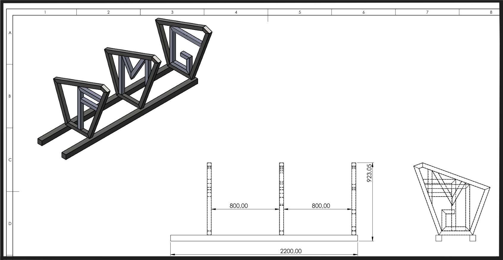

Projets réalisés
Fabrication d’un porte-vélo
 

Dans le cadre de ce projet, mes collègues et moi avons conçu et fabriqué un porte-vélo entièrement fonctionnel. Le travail a été réalisé en plusieurs étapes :
Conception assistée par ordinateur (CAO) : Utilisation de SolidWorks pour modéliser l’ensemble du porte-vélo en 3D, valider l’assemblage, choisir les matériaux et s’assurer de la solidité de la structure.
Fabrication en atelier : Découpe précise des barres métalliques, assemblage par soudure, et vérification de l’alignement et de la stabilité. Un soin particulier a été apporté à la qualité des soudures.
Finition : Nettoyage, ponçage, puis peinture complète pour protéger le métal de la corrosion et obtenir une finition esthétique.
Ce projet nous a permis de combiner la conception numérique avec la réalisation pratique en atelier, tout en développant nos compétences en travail d’équipe, en précision mécanique et en organisation de projet.
Conception d'une scie circulaire
Le projet consistait à concevoir une scie circulaire transportable, adaptée aux travaux de coupe sur différents sites. L’objectif était de combiner mobilité, robustesse et sécurité, tout en respectant les contraintes mécaniques et ergonomiques.
La conception a été réalisée sur SolidWorks, permettant la modélisation 3D complète de la structure, la simulation des assemblages et l’analyse des efforts mécaniques. Le système comprend une structure en acier mécano-soudé, un moteur relié à la lame par des courroies trapézoïdales, des paliers auto-alignants, ainsi qu’un carter de sécurité protégeant la transmission et la lame.
Un dispositif de réglage de la tension des courroies par déplacement du moteur a également été intégré. L’ensemble a été pensé pour être transportable, stable et sûr, tout en assurant des performances fiables sur le terrain.